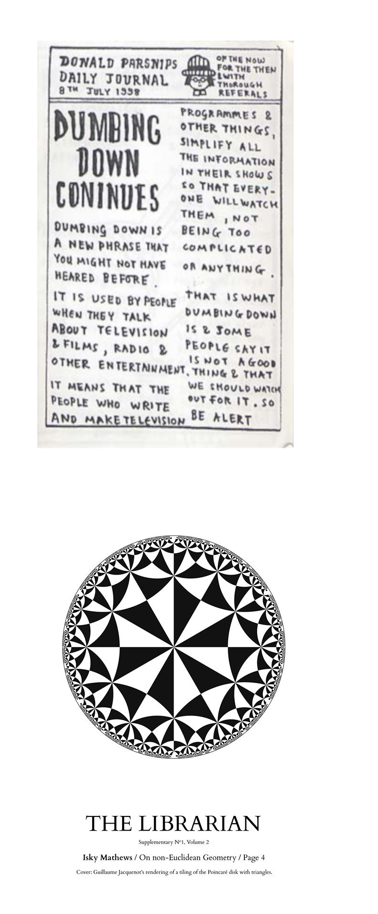

Miscellany
The Editor
The Library
librarians@westminster.org.uk
Chair, Library Committee
jonny.heywood@westminster.org.uk
Editor, The Librarian
joshua.loo@westminster.org.uk
The Librarian Online
https://librarian.cf
Contents
The Stalinist Legacy and ‘The Tower’ are reviewed at the start of this issue, followed by a restaurant, viz., the Escoffier Rooms, and another publication, viz. Pink.
News
The Librarian wishes to congratulate Benedict Randall Shaw, Jadd Virji, a member of the Library Committee, on their ringing their first quarter peals1,2, and wishes all members of the school luck and sound mind as they prepare to receive the results of public and internal examinations.
The school reaches the end of another year; the cycle of replacement goes on. It is inevitable, though nevertheless regrettable, that this cycle should not spare the Library Committee too. We must therefore say goodbye to the departing members of the committee, viz.—
Morayo Adesina,
James Bithell,
Lorna Bo,
Robert Doane-Solomon,
Shri Lekkala,
Benedict Mee,
Joshua Rosen,
Brandon Tang,
Margaret Teh,
Michelle Yang, and
Polina Zakharov.
In particular, we say goodbye to James Bithell, who served as interim Chair of the committee in the first term after Elliot E.G. Jordan’s departure, before Jonny Heywood was elected as the present Chair.
Errata
We thank—
Trevor Chow, for informing us of a typo in ‘spokeswoman’,
Jonathan Watts, for informing us of a duplication in disclaimer in the miscellany, problems with quotation marks in citations, and inconsistent footnote numbering, and
everyone else involved in the production process, especially the librarians, for reducing the number of typos greatly.
About The Librarian
Note: articles in The Librarian do not necessarily reflect the views of any entity, notwithstanding any impression created to the contrary, unless there is some explicit indication to the otherwise.
For the purposes of clarity, ‘any entity’ refers, inter alia, without prejudice as to the paragraph above, to authors, those connected with them, The Librarian, the editors thereof, the Library Committee, the members, the Chair and the Assistant Chair thereof, the library, the librarians, and the school.
The Librarian is the publication of the Library Committee of Westminster School. The existence of a Library Committee dates back to at least December 1879, when the editor of The Elizabethan replied to a letter on the ‘disgraceful’ state of the books in the library, that ‘[s]ome years ago a regular library committee was in existence’. The present state of the library is far removed from its state in the late 1870s; the employment of four librarians, the Library Committee and the general interest of the rest of the school have all combined to ensure that there is little danger of a lapse into disrepair. The Library Committee broadly exists to support the work of the librarians; some examples of this support include the conveying of pupil views to the librarians, direct support (e.g., in desk duty, and charitable activities), and the publication of The Librarian.
Some find that they are unwilling to ‘go all the way to the library’. Consequently, The Librarian offers a subscription service. Readers may email the editor, with a specified destination, which must either be an email or a physical location. This is, of course, free, as is The Librarian in general. Issues are occasionally uploaded to https://librarian.cf, which is likely to be increasingly frequently updated. The athletically blessed are encouraged to make the journey to the library. The physical location in most circumstances must be in the school; we do not rule out alternative arrangements, but most would be insufficiently feasible.
The Librarian is typeset in a Bembo-like font using . Authors retain copyright of their works; rights to everything else remain The Librarian’s unless the context makes this repugnant.
We encourage submissions of all kinds. These include, but are not limited to, articles, reviews, letters, puzzles, short stories, poems, compositions, and answers to problems in the Adventures in Recreational Mathematics series. Submissions may be sent to the editor. Readers may also place notices in The Librarian, by prior arrangement with the editor.
As The Librarian is the publication of the Library Committee, it was initially principally concerned with books, and reviews of works that one might find in the library. However, many other articles have also been found. Thus The Librarian Supplement was formed, to house those articles that do not fit in the traditional scope of The Librarian. The division is to some extent arbitrary, and so we encourage readers to read both.
A sufficient number of mathematic and scientific articles are published in The Librarian Supplement to require the services of Benedict Randall Shaw and Isky Mathews respectively, so correspondence on those subjects (except letters) should be directed to them.
A late letter
Policy on letters We urge readers not to write any letters that would make necessary the formulation of a policy more extensive than this.
Submissions Readers may submit letters to the editor, or to Room 5, Lower Corridor, College. Identification is unnecessary; impersonation is prohibited.
Note on letters Letters are reproduced as they were sent. Consequently, The Librarian is not responsible for, inter alia, any intellectual inadequacies that may arise, or errors of grammar, syntax, or orthography. We are, of course, responsible for any errors of our own creation.
Guidance We suggest that readers in need of advice consult the October 1874 number of The Elizabethan.
Sir,
Have you noticed the similarity between Adam Dant’s Parsnip’s Daily Journal, which he produced, unsolicited, daily, as the name would suggest, in print runs of one hundred each day, and distributed freely to the public on his way to work, and your august journal, which seems yet to be solicited by anyone?
Yours, &c.,
pastinacas amans
We have received a picture with the letter, showing the similarity; we see no reason not to publish it.

Stephanie Pattenden, “1260 Doubles Rung at Pimlico (St Saviour), Greater London,” accessed June 24, 2018, https://bb.ringingworld.co.uk/view.php?id=1236624.↩
Stephanie Pattenden, “1260 Doubles Rung at Pimlico (St Saviour), Greater London,” accessed July 2, 2018, https://bb.ringingworld.co.uk/view.php?id=1237061.↩